A Little Push
A Little Push
Sometimes we need a little push.
A little push to stay on top of the things that matter.
A Little Push is a simple personal reminder app for two kinds of everyday needs: reminder-based pushes and event-based pushes. Use reminder pushes for routines, habits, chores, medications, and recurring responsibilities. Use event pushes for birthdays, anniversaries, holidays, and other important dates you want to see coming.
Free to try — only purchase if you’re pleased with it.
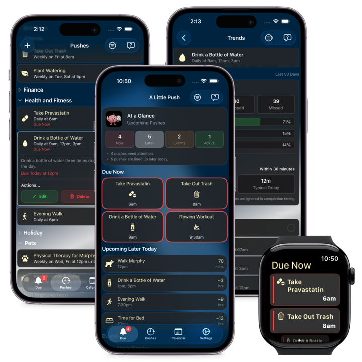
Pushes that match your life
Create pushes with flexible schedules for one-time, daily, weekly, monthly, yearly, or date-based events. Then track what you completed, skipped, or missed so you can stay organized and build better follow-through over time.
Use A Little Push to:
- View what is due now, what is coming later today, and what you have already acknowledged
- Track history over time so you can see how consistently you follow through
- Set targets and see how you perform against them
- Organize pushes with icons and categories for a cleaner, more personal setup
- Use notifications and widgets to keep important things visible
Lightweight by design
A Little Push is designed to be lightweight, personal, and easy to manage without the overhead of a full task manager.
About A Little Push
What is A Little Push
A Little Push is a simple reminder app that helps you remember both recurring tasks and important life events. It is built for the small things that are easy to forget but still matter, from taking medication or watering plants to remembering a birthday or anniversary before it arrives.
What is a Push
A Push is something you want to keep track of and not lose sight of. There are two main types of pushes in A Little Push:
- Reminder pushes for actions you need to do, like habits, routines, chores, errands and other recurring tasks.
- Event pushes for dates you want to remember, like birthdays, anniversaries, holidays, and milestones.
Who Needs a Little Push
A Little Push is for anyone who wants a lightweight way to stay consistent with routines and stay aware of important upcoming dates. It works well for people managing everyday responsibilities, building habits, keeping family events visible, or simply trying to remember the small things before they become missed things.
What Makes A Little Push Different
Most reminder apps focus only on tasks or only on habits. A Little Push takes a more balanced approach by supporting both action-based reminders and date-based events in one simple experience.
Instead of turning your life into a complicated productivity system, A Little Push keeps the focus on what matters: what needs your attention now, what is coming up next, and how well you are following through over time. With notifications, widgets, categories, history, and simple tracking, it gives you a practical way to stay organized without feeling overwhelmed.
Start free, upgrade when you’re ready
Free Features
A Little Push includes everything you need to start remembering what matters. Start for free. Create reminders, see what’s due, and keep important tasks from slipping through the cracks. Reminders are something you act on: each one becomes due, can become overdue, and is cleared by marking it completed or missed.
- Create unlimited one-time and repeating reminders
- See what’s due now and what’s coming next
- Receive notifications when reminders are due
- Snooze reminders and set advanced notifications
- Track trends on how promptly you complete your reminders
Upgrade to Pro
Pro adds powerful features, deeper device integration, and extra convenience.
Pro lets you create events. Events help you keep track of things happening on a specific date or across a date range, such as appointments, birthdays, anniversaries, holidays, vacations, and other important occasions.
- Create reminders and events using your voice, either in the app or with Siri
- Add Home Screen Widgets
- Use your Apple Watch to view and respond to reminders
- Add holidays with a single tap
- Unlock all current and future Pro features
Sample Screens
A quick look at A Little Push on iPhone and Apple Watch.
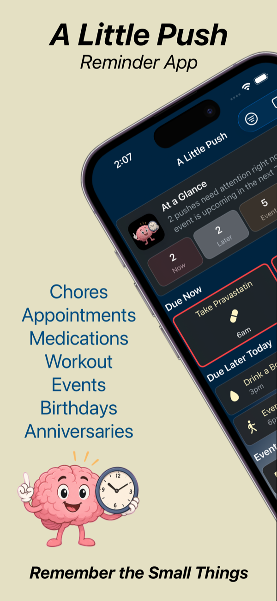
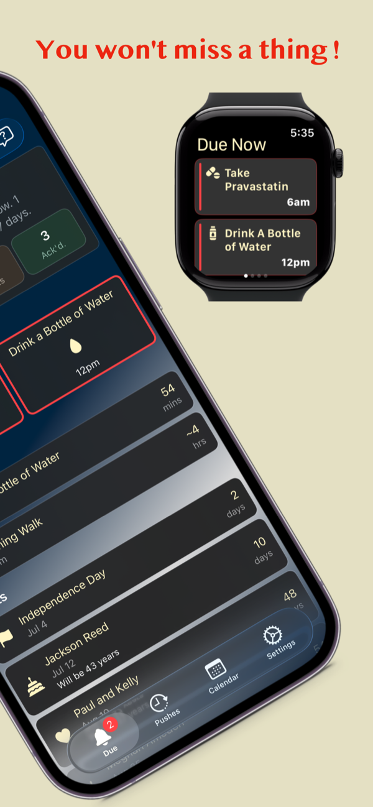
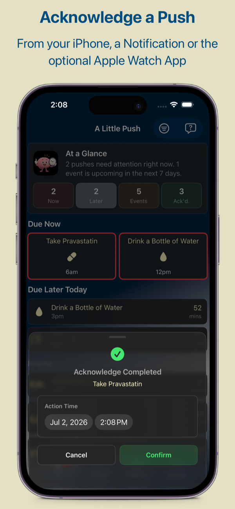
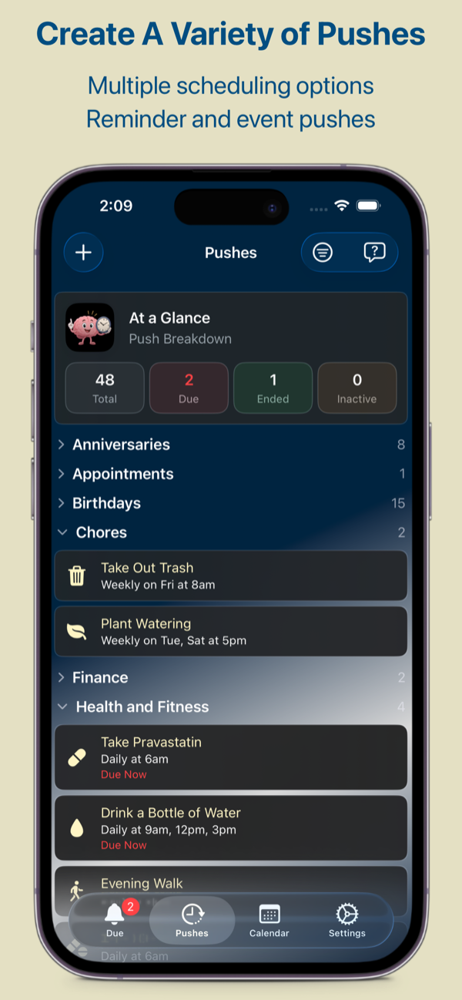
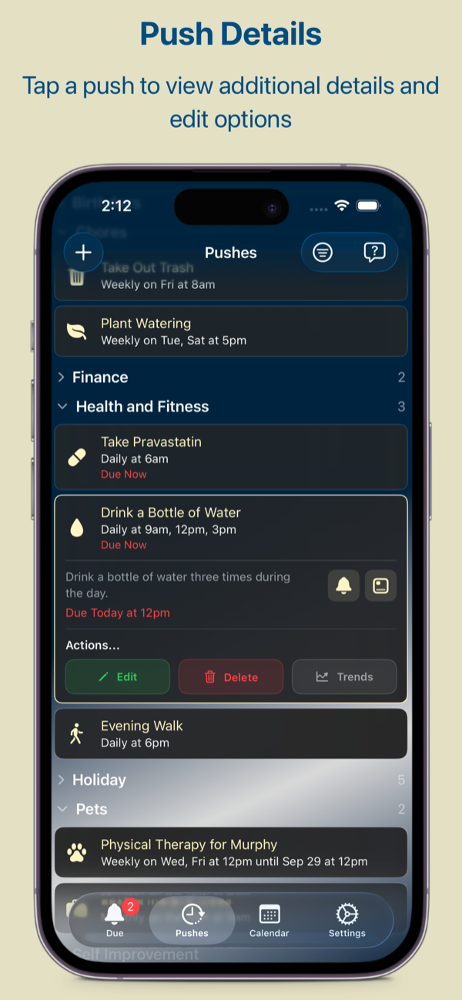
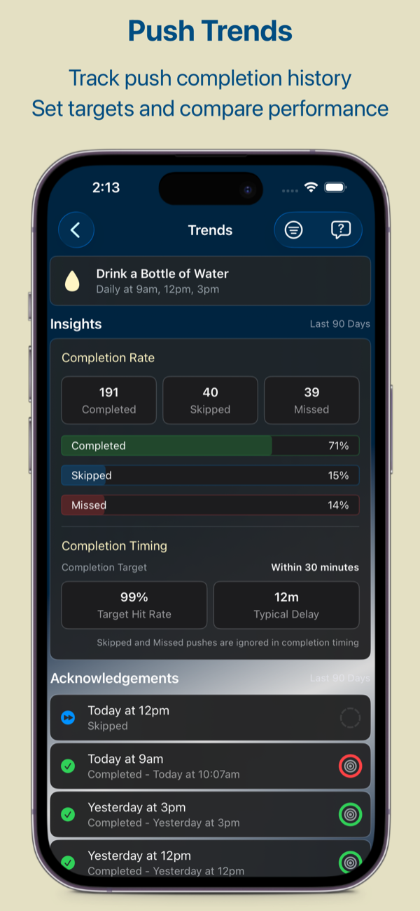
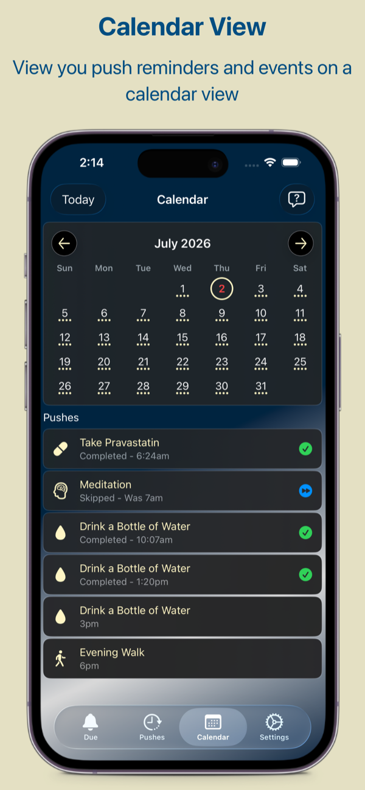
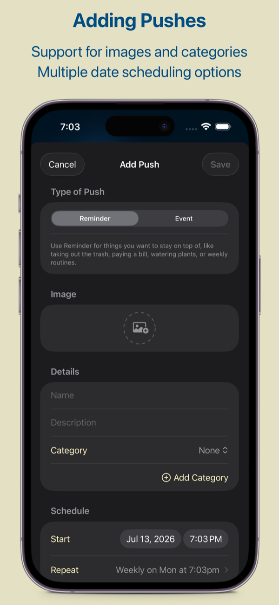
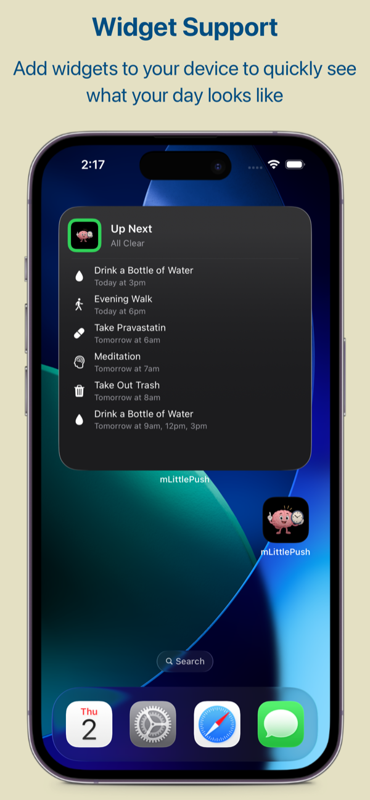
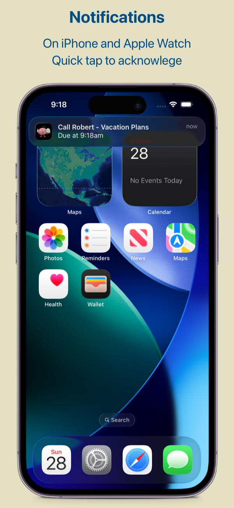
On Apple Watch
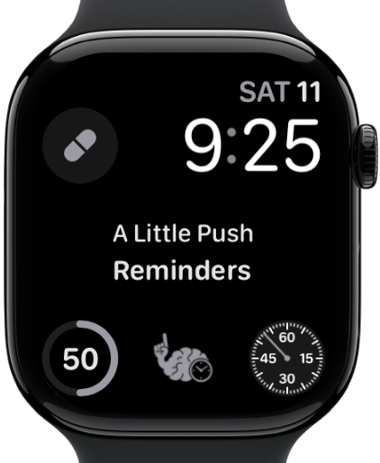
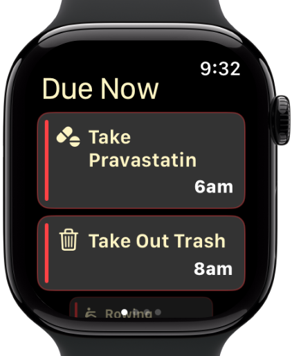
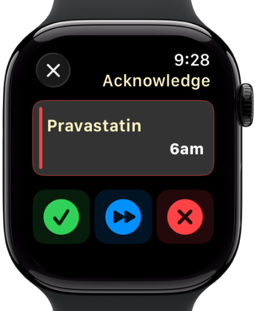
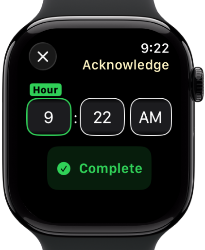
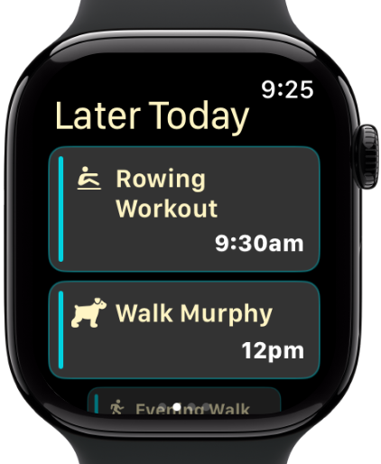
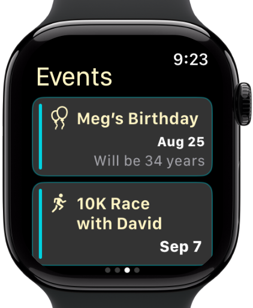